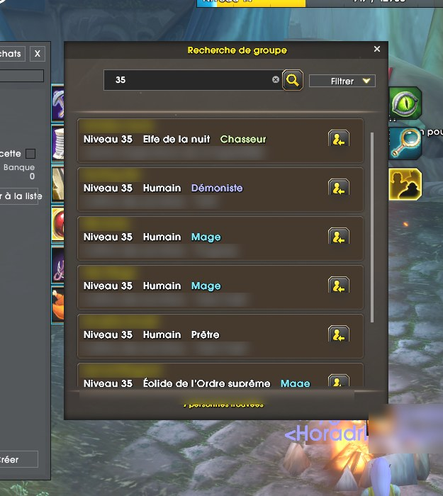

News › Déjà niveau 35
21 heures de jeu : déjà niveau 35 !
5 novembre 2026
Moins d'une journée après le lancement, la recherche de groupe affiche déjà des aventuriers de niveau 35. Ça monte vite en Azeroth !

Après seulement 21 heures de jeu, une recherche « 35 » dans l'outil de recherche de groupe renvoie déjà sept joueurs : chasseur elfe de la nuit, démoniste, mages et prêtre humains, et même un mage éolide.
Pendant ce temps, votre créateur prend son temps… et vient de passer niveau 14 ! 😄 Pas de course ici : on profite de chaque zone, et on vous rapporte au passage les astuces et les pièges qu'on croise.
Toi aussi tu veux grimper vite ? Suis le leveling pas à pas, quête par quête, et prends les quêtes de donjon : elles rapportent beaucoup plus d'expérience dans Forever.